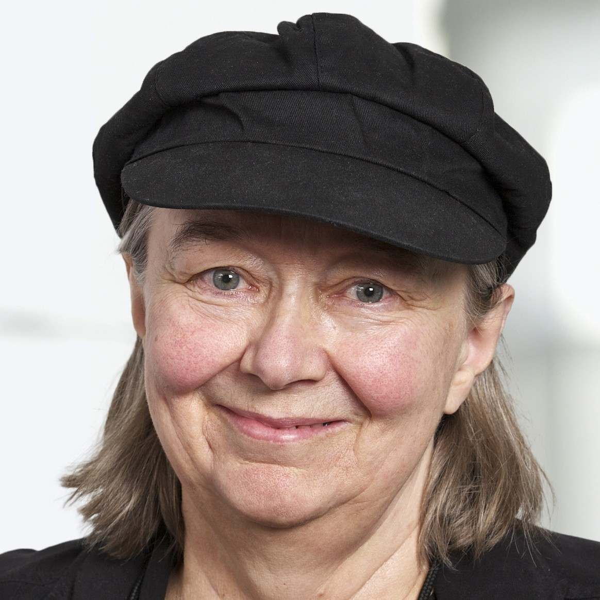
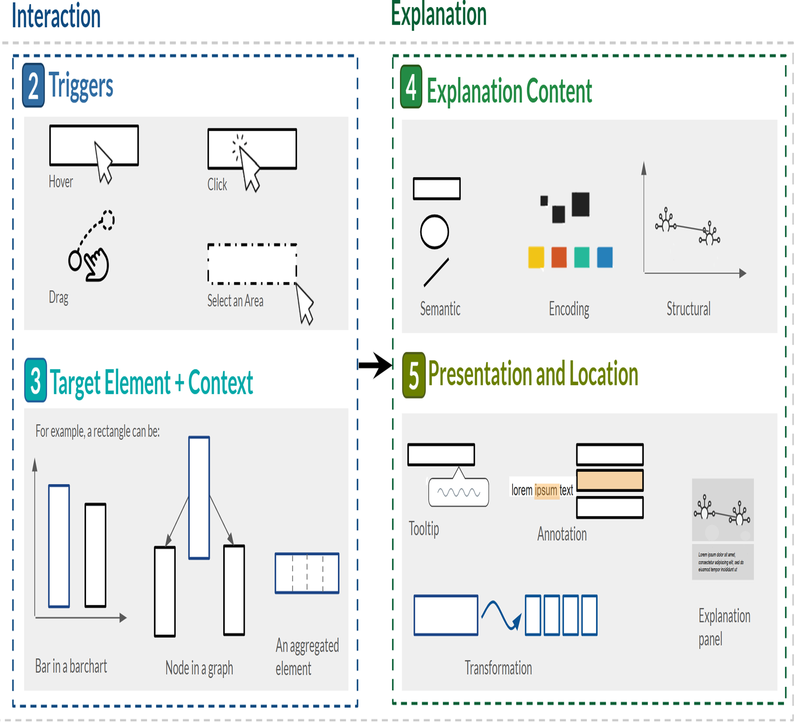
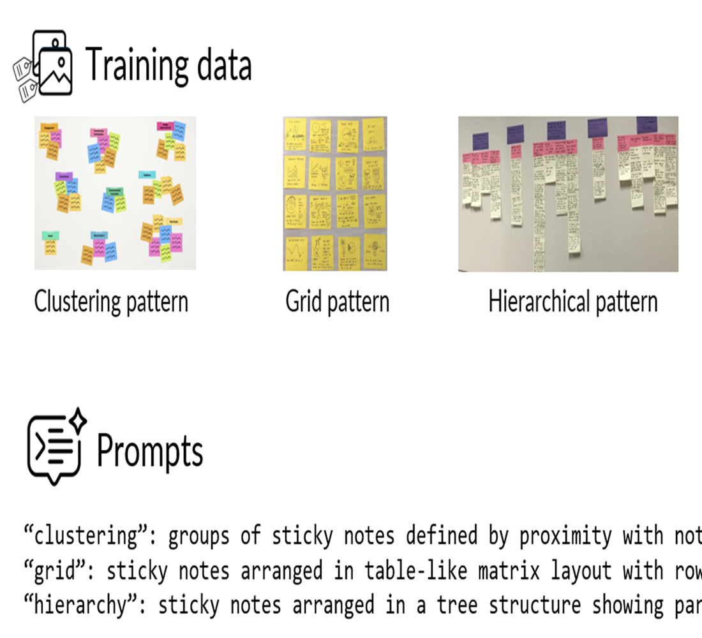
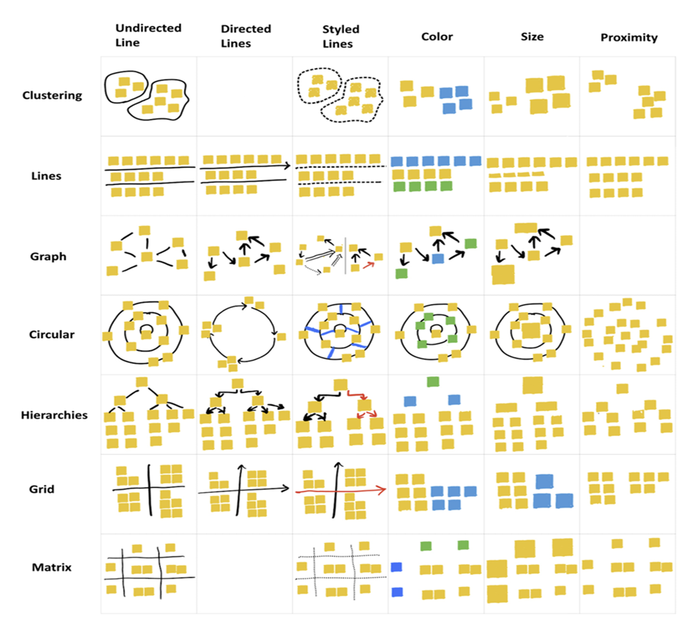
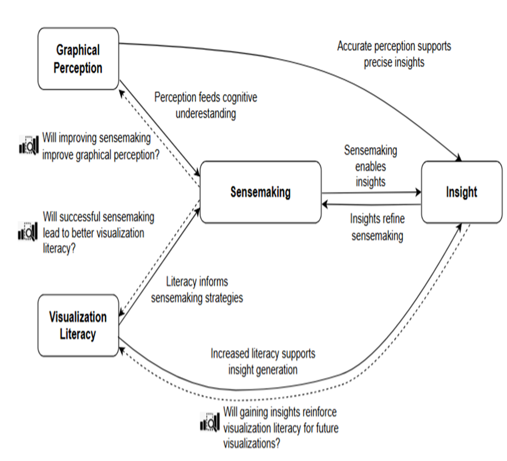
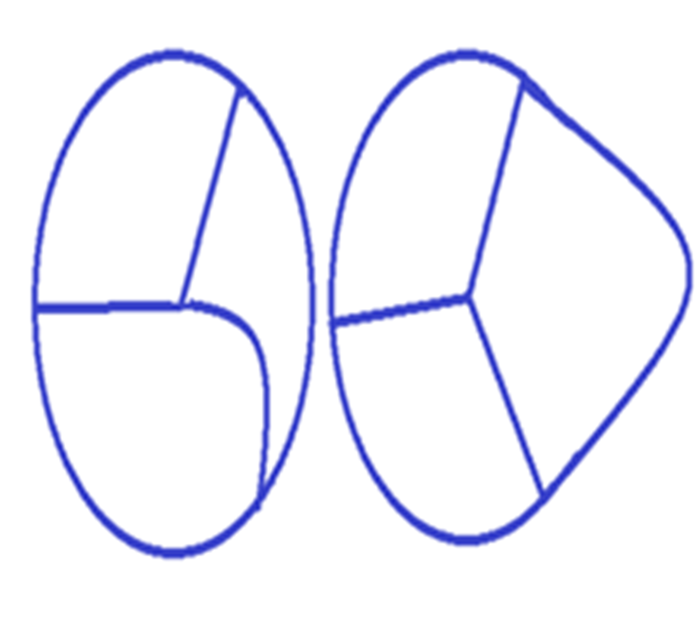
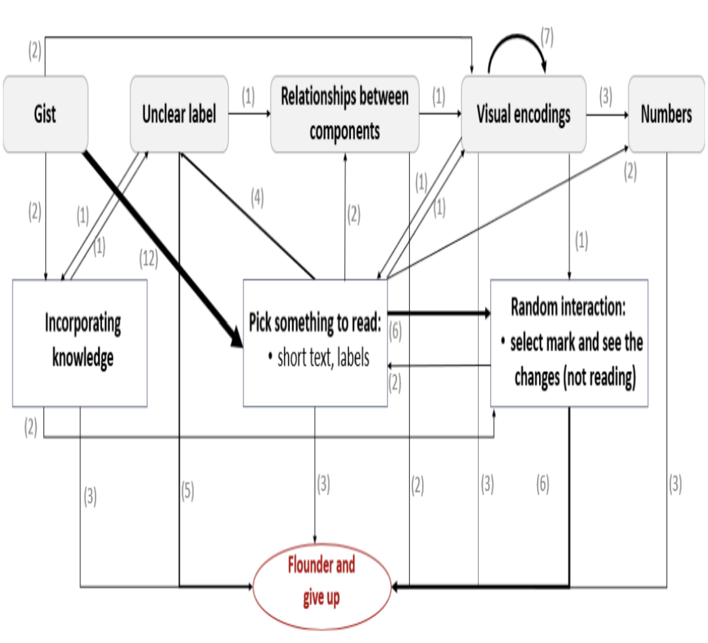
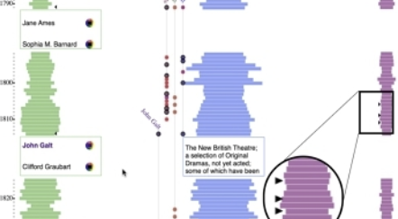
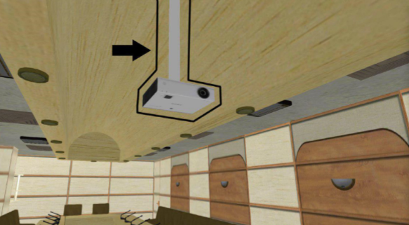

I’m a computer science PhD in Human-Computer Interaction and data visualization, at SFU.
My research, supervised by Prof. Sheelagh Carpendale 
In my thesis, I introduced serendipitous explanations which is a new approach that provides embedded, in-situ visual explanations as users interact with interface elements, rather than guiding them through a fixed, predefined path. My contributions have been published in leading venues, including IEEE TVCG, ACM PACM HCI, and EuroVis.
Recently, I interned at Autodesk, where I visualized uncertainty in AI-generated output to support more informed, uncertainty-aware decision-making during AI-assisted workflows.
Understanding where people struggle, and how they develop strategies to make sense of visualizations.
Creating explanations within the flow of exploration, triggered by people's own interactions.
Studying how people use space and visual organization to think, explore, and create.
Visualization, interaction & sensemaking · 2018–2026








LinkedIn: linkedin.com/in/mrymrzie